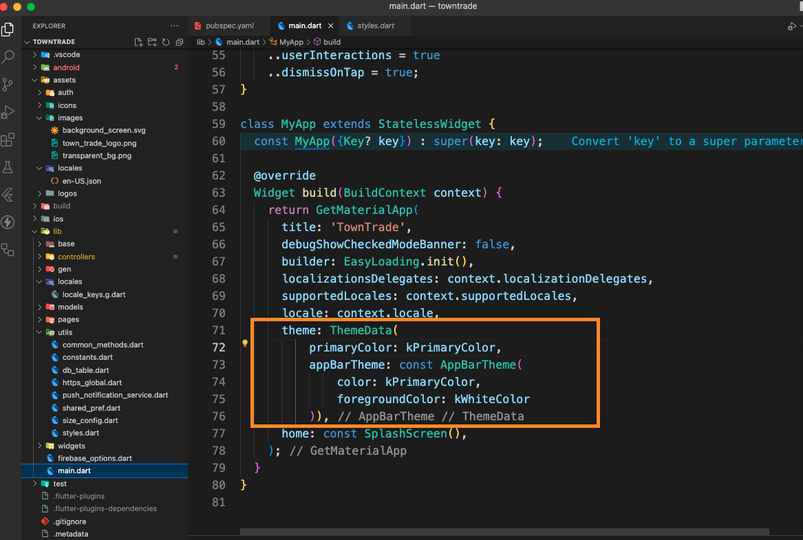
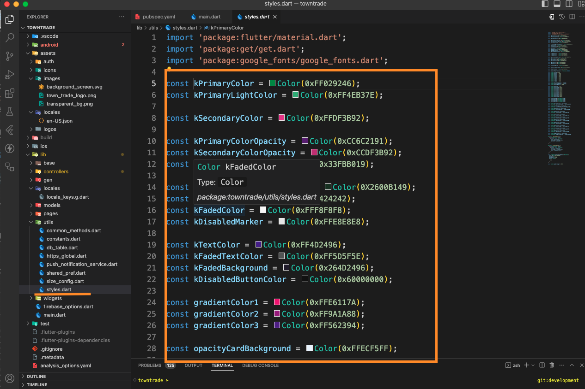

Changing Themes and Colors of The Apps
This guide walks you through the steps of customizing the themes and colors of your app. Here you can globally set colors, fonts, and other design properties for a consistent look across your app.
Step 1: Define a Theme in themeData
Flutter’s ThemeData class allows you to define global styles for your app. You can customize various properties like the primary color, accent color, typography, and more.
Example Basic Theme
In the MaterialApp widget, you can set a theme parameter with a ThemeData instance:

This sets the basic app colors like the primary color, accent color, and font family, which will be applied globally throughout your app.
Update Colors in style.dart
If you want to update the theme's colors, you can do so in a centralized file like style.dart, which is used to manage the app's color scheme. This approach allows for easier maintenance and consistency across your app.
Example of Updating Colors
- Define Colors in
style.dart
First, define your colors in style.dart. For instance, you can change the primary color and accent color by updating their HEX color values:
